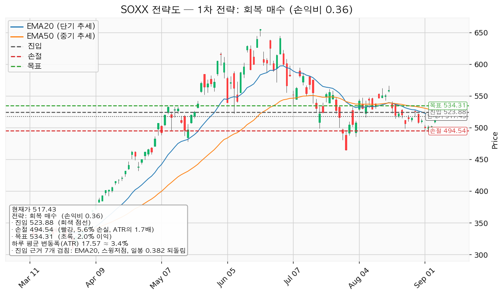
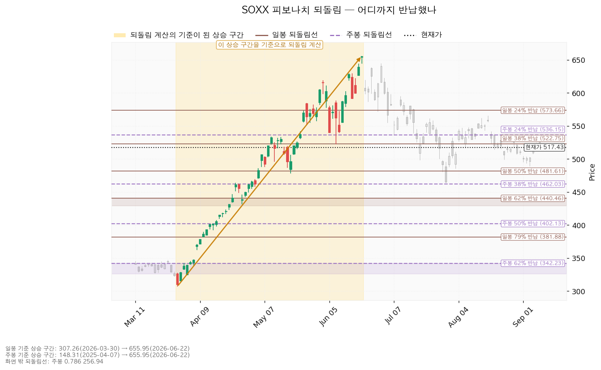
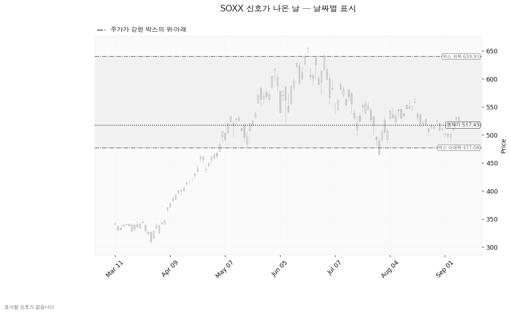
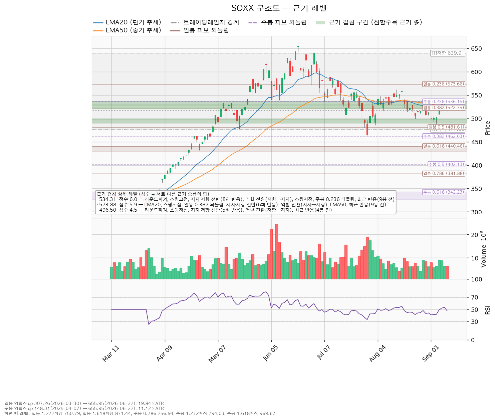

SOXX(iShares Semiconductor ETF)는 미국에 상장된 반도체 설계·제조·장비 기업들을 담아 지수를 그대로 따라가는 상장지수펀드입니다.
기준: 2026-09-10 종가 517.43, 하루 평균 변동폭(ATR 14일) 17.57
| 구분 | 가격 | 판정 방식 | 현재 상태 | 현재가 대비 |
|---|---|---|---|---|
| 회복선(진입 조건) | 523.88 | 일봉 종가로 회복한 뒤 그 위에서 지지 | 미회복 — 조건이 채워져도 이번 회차는 손익비 미달로 진입하지 않습니다 | +1.25% (0.37 ATR) |
| 집행 손절 | 494.54 | 장중 저가 터치 | 진입한 경우에만 유효합니다. 미진입 상태에서는 아무 의미가 없습니다 | -4.42% (1.30 ATR) |
| 관망 종료 기준 | 490.00 | 일봉 종가로 아래 마감 | 유지 중 — 아래쪽 근거 구간(490.00~498.74, 겹침 4.5점)의 하단 | -5.30% (1.56 ATR) |
| 확인선 | 534.31 | 일봉 종가 돌파 후 되돌림에서 지지 확인 | 미돌파 — 겹침 6.0점으로 위쪽에서 가장 두꺼운 저항 | +3.26% (0.96 ATR) |
| 폐기선 | 477.08 | 이탈 후 3거래일 내 종가 회복 실패(또는 그 전에 459.51 아래 종가 마감) + 반등에서 저항 확인 | 유지 중 — 하루 변동폭의 2.30배 아래이므로 실무상 작동하는 거리입니다 | -7.80% (2.30 ATR) |
박스 상단 639.91(+23.67%)은 맥락으로만 적습니다. 이번 확인선은 박스 상단이 아니라 근거가 가장 두껍게 겹치는 534.31입니다.
직전 리포트는 "522.80 일봉 종가 회복 시 진입, 집행 손절 512.54, 목표 535.49"를 걸었습니다. 판정은 조건 충족, 이후 미결입니다.
| 날짜 | 종가 | 판정 |
|---|---|---|
| 2026-09-01 ~ 09-03 | 500.31 / 501.44 / 502.20 (저가 495.09·493.31·489.21) | 회복선 아래에서 눌림. 이 구간은 진입 전이므로 손절 판정 대상이 아닙니다 |
| 2026-09-04 | 519.86 | 회복선 바로 아래까지 복귀 |
| 2026-09-08 | 528.40 | 회복선 522.80을 종가로 상회 — 진입 조건 충족 |
| 2026-09-09 | 532.00 (고가 535.48) | 목표 535.49에 0.01 못 미침. 목표 미체결 |
| 2026-09-10 | 517.43 (저가 514.31) | 손절 512.54 미터치. 진입가 522.80 대비 -1.03% |
진입 조건이 충족된 뒤 목표와 손절 어느 쪽에도 닿지 않았습니다. 09-09 고가가 목표에 0.01 모자랐던 것이 이 회차의 결과를 갈랐습니다.
| 구분 | 직전(2026-08-31) | 이번(2026-09-11) | 왜 움직였나 |
|---|---|---|---|
| 현재가 | 508.52 | 517.43 (+1.75%) | — |
| 하루 평균 변동폭 | 20.53 | 17.57 | 9월 초 눌림 이후 일중 등락 폭이 줄었습니다 |
| 회복선 | 522.80 (겹침 4.3점) | 523.88 (겹침 5.9점) | EMA50이 532.59에서 527.69로 내려와 EMA20(520.57)과 붙었고, 6회 반응한 선반과 역할 전환(지지→저항)이 같은 구간에 더해졌습니다 |
| 집행 손절 | 512.54 (0.5 ATR) | 494.54 (1.67 ATR) | 직전에는 진입 바로 아래 버퍼였고, 이번에는 아래쪽 근거 구간(498.93~500.00) 밖으로 밀어냈습니다 |
| 목표 | 535.49 (겹침 7.0점) | 534.31 (겹침 6.0점) | 같은 매물대입니다. 선반 반응 횟수가 7회에서 8회로 늘었고 마지막 반응이 2026-09-09입니다 |
| 손익비 | 1:1.24 | 1:0.36 | 목표까지의 거리는 그대로인데 손절 폭이 10.26에서 29.34로 넓어졌습니다 |
| 확인선 | 639.91 | 534.31 | 아래 정정 항목 참조 |
| 폐기선 | 457.92 | 477.08 | 90일 창이 갱신되며 박스 하단이 재판정됐습니다(가격이 박스 안에 머문 비율 0.922 → 0.956) |
| RSI(14) | 43.11 | 47.75 | 중립 하단에서 중립으로 |
직전은 "회복선 회복 시 진입(손익비 1.24)"이었고 이번은 패스입니다. 바뀐 것은 손절 위치 하나입니다. 손절이 겹침 구간 밖으로 밀리면서 손절 폭이 세 배 가까이 넓어졌고, 목표는 같은 자리에 남아 손익비가 1 아래로 내려왔습니다. 박스·추세·박스 내부 판정은 직전과 같습니다.
| 항목 | 값 |
|---|---|
| 현재가 (2026-09-10 종가) | 517.43 |
| 단기 추세선(EMA20, 최근 20일 가중평균) | 520.57 (현재가 대비 +0.61%) |
| 중기 추세선(EMA50) | 527.69 (현재가 대비 +1.98%) |
| RSI(14) — 최근 14일 상승·하락 강도 | 47.75 (중립) |
| 하루 평균 변동폭(ATR 14일) | 17.57 (주가의 3.40%) |
| 박스(횡보 구간) | 477.08 ~ 639.91, 90일 기준 · 유효 |
| 박스 안 현재 위치 | 아래에서 24.8% 지점 |
| 국면 라벨 | 횡보 레인지(구조 유지 — 하단 사수 조건부) |
| 추세 방향 | 하락 (현재가가 EMA20·EMA50 아래, 두 선도 역배열) |
| 고점 대비 | 655.95(2026-06-22) 대비 -21.12% |
조회된 일봉은 753개이고, 40일·90일·180일 세 창을 모두 시험해 가격이 가장 잘 지킨 창을 골랐습니다.
| 시험한 창 | 박스 안에 머문 비율 | 방향성 표류 | 박스 폭(하루 변동폭 배수) | 판정 |
|---|---|---|---|---|
| 40일 | 0.900 | 0.08 | 3.85배 | 유효 |
| 90일 | 0.956 | 0.13 | 9.27배 | 유효 — 채택 |
| 180일 | 0.950 | 0.628 | 18.88배 | 방향성이 강해 횡보로 볼 수 없음 |
90일 창의 가격 유지 비율이 가장 높아 이 창을 채택했습니다. 최근 넉 달치 횡보를 근거로 한 박스입니다.
박스 모양만으로는 매집과 재분산을 구분할 수 없습니다. 판단 근거는 박스 안쪽의 거래량과 저점 흐름입니다.
| 관측 항목 | 값 | 해석 |
|---|---|---|
| 지지 테스트 6회 | 05-12 저가 495.71(평소의 1.65배) → 05-19 477.95(1.38배) → 07-17 498.54(1.51배) → 07-29 464.08(1.80배) → 08-24 498.93(0.84배) → 09-03 489.21(0.93배) | 8월 하순 이후 두 번의 지지 테스트는 평소보다 적은 거래량으로 끝났습니다 |
| 지지 테스트 거래량 추세 | 혼조 | 직전 리포트의 "증가"에서 바뀐 항목입니다 |
| 저점 절상 여부 | 절상 | 매집 쪽에 유리한 관측 |
| 상승봉 대 하락봉 거래량비 | 0.80 | 오를 때 거래량이 내릴 때의 80%에 그침 — 매수 주도력 부족 |
| 박스 내부 종합 판정 | 중립 | 매집 우위도 재분산 우위도 아님 |
| 직전 구간 | 308.20~399.36 박스에서 위로 돌파해 올라온 자리 | 상승 뒤 만들어진 박스이므로 재축적과 분산의 갈림길 |
저점은 절상되고 지지 테스트의 매도 거래량은 혼조로 바뀌었지만, 오를 때 거래량이 따라오지 않는 상태는 그대로입니다. 종합 판정이 중립이므로 박스 내부가 매집 우위일 때만 산출되는 지지 확인 매수는 이번에도 조건을 채우지 못했고, 그래서 산출되지 않았습니다. 아래 셋업이 회복 매수 하나뿐인 이유가 이것입니다.
산출된 셋업은 하나뿐입니다. 국면이 하락·중립이라 되돌림 저가매수는 제시되지 않고, 저항을 회복한 뒤에만 롱으로 전환하는 형태만 남습니다. 개별 종목·ETF에 매도(숏) 셋업은 제시하지 않습니다.
| 항목 | 회복 매수 — 대표 셋업 (판정: 보류) |
|---|---|
| 진입 | 523.88 (현재가 대비 +1.25%, 하루 변동폭의 0.37배 위) |
| 진입 근거 겹침 | 점수 5.9 — EMA20(520.57), EMA50(527.69), 스윙저점, 일봉 38% 되돌림(522.75), 6회 반응한 선반(525.01), 역할 전환(지지→저항), 여기에 9봉 전 실제 반응. 근거 구간 520.57~527.69 |
| 손절 | 494.54 (진입 대비 -5.60%, 1.67 ATR) |
| 손절 근거 | 근거 겹침 구간(498.93~500.00, 2.3점) 바로 아래. 구간 안쪽에 두지 않고 밖으로 밀어냈고, 그만큼 손익비가 낮아졌습니다 |
| 1차 목표 = 최종 목표 | 534.31 (진입 대비 +1.99%, 0.59 ATR) |
| 목표 근거 겹침 | 점수 6.0 — 라운드피겨(530), 스윙고점, 8회 반응한 선반(534.93), 역할 전환(저항→지지), 스윙저점, 주봉 24% 되돌림(536.15), 9봉 전 실제 반응. 근거 구간 530.00~536.15 |
| 손익비 | 1:0.36 (손절 1.67 ATR) — 전 구간 손익비도 0.36입니다 |
| 구조 증명도 | 회복 확인형 — 저항을 종가로 회복한 뒤에만 진입하므로 진입가는 불리하지만 구조가 먼저 증명됩니다 |
| 엣지 종류 | 모멘텀 — "저항을 종가로 되찾으면 그 방향이 이어진다"는 전제. 자주 틀리고 소수가 크게 맞는 유형입니다(이 유형의 일반적 성격이며 이 엔진에서 측정한 값이 아닙니다) |
| 청산 규칙 | 목표 534.31에서 전량. 트레일링은 걸지 않습니다 |
이 셋업의 손절은 이미 근거 구간 밖으로 밀어낸 구조적 손절이므로, 좁은 손절 기준과 구조적 손절 기준의 손익비가 따로 나뉘지 않습니다. 손익비 0.36은 손절을 조여 만든 숫자가 아니라 구조 손절 그대로의 숫자입니다.
판정: 패스. 손익비가 1 미만이므로 이번 회차에 이 셋업은 걸지 않습니다.
선정 근거는 손익비 0.36 × 구조 증명도(회복 확인형) × 진입 근거 겹침 5.9점입니다. 비교 대상이 될 다른 셋업이 없어 손익비 1등과 대표가 갈리는 상황은 이번에 발생하지 않았습니다. 저항을 종가로 회복한 것을 확인한 뒤 들어가므로 진입가는 불리하지만 구조가 먼저 증명되는 형태이며, 지금 값이 싸다는 이유로 517선에서 미리 사는 방식은 구조 증명이 0이고 하락 국면에서는 산출 자체가 되지 않습니다. 증명도가 높아도 손익비가 0.36이면 걸 수 없다는 것이 이번 결론입니다.
분할 없이 단일 목표입니다. 중간 레벨이 잡히지 않아 1차 목표에서 일부를 덜고 잔여분 손절을 진입가로 올리는 절차가 없으며, 1차 목표 체결 후의 하한 손익비도 산출되지 않았습니다. 진입에서 목표까지의 거리가 0.59 ATR로 2배에 못 미치므로 트레일링이나 다단 청산을 권하지 않습니다(이 2배는 관행적 기준이지 정설은 아닙니다). 534.31 위 구간은 이 포지션의 연장이 아니라 새 셋업으로 다시 잡습니다.

저항을 종가로 회복하기 전 구간이므로 지금 값에 따라붙는 매수는 권하지 않습니다. 되돌림을 기다린다면 볼 좌표는 아래와 같습니다.
| 구분 | 값 |
|---|---|
| 대기 진입 후보 | 499.46 (겹침 2.3점 — 스윙저점, 라운드피겨, 12봉 전 반응. 구간 498.93~500.00) |
| EMA20 투영치 | 520.57 → 519.33 (5봉 후) |
| EMA50 투영치 | 527.69 → 525.83 (5봉 후) |
투영치는 현재가 517.43이 5거래일 동안 그대로 유지될 경우의 이동평균 위치이며, 가격 예측이 아닙니다.
확인선 534.31과 셋업 목표 534.31은 같은 가격입니다. 같은 자리에서 두 갈래로 갈립니다.
① 관찰 — 일봉 종가가 523.88 아래로 마감. 구조 이탈이 시작된 것이나 되돌아 올라오면 속임수 하락(spring)일 수 있어 아직 무효가 아닙니다. → 신규 진입만 중단하고 집행 손절은 그대로 둡니다.
② 경고 — 이탈 후 3거래일 안에 523.88을 종가로 회복하지 못함, 또는 그 전에 일봉 종가가 506.31 아래로 마감(하루 평균 변동폭 1배만큼 더 밀림). 둘 중 먼저 오는 쪽입니다. → 잔여 비중 축소, 반등이 나오면 이 가격에서의 반응을 확인합니다.
③ 무효 — 반등이 523.88에서 막히고 그 아래로 되밀림(지지가 저항으로 역할 전환). 구조 해석이 틀린 것으로 확정됩니다. → 포지션 정리 후 새 구조가 만들어질 때까지 관망.
장중에 잠깐 523.88을 내주는 움직임은 위 어느 단계에도 해당하지 않습니다. 판정은 전부 일봉 종가 기준입니다. 집행 손절 494.54는 구조 판정이 몇 단계에 있든 무관하게 별도로 작동합니다.
일봉과 주봉 모두 기준이 될 상승 구간이 확보되어 되돌림이 계산됐습니다.
| 구분 | 기준 상승 구간 | 구간 크기 |
|---|---|---|
| 일봉 | 307.26 (2026-03-30) → 655.95 (2026-06-22) | 하루 평균 변동폭의 19.84배 |
| 주봉 | 148.31 (2025-04-07) → 655.95 (2026-06-22) | 주간 평균 변동폭의 11.12배 |
| 되돌림 | 일봉 기준 | 주봉 기준 |
|---|---|---|
| 24% 반납 | 573.66 | 536.15 |
| 38% 반납 | 522.75 | 462.03 |
| 50% 반납 | 481.61 | 402.13 |
| 62% 반납 | 440.46 | 342.23 |
| 79% 반납 | 381.88 | 256.94 |
현재가 517.43은 일봉 38% 반납선(522.75) 바로 아래에 있습니다. 이 선은 EMA20·EMA50·6회 반응한 선반과 한자리에 모여 회복선 523.88을 구성합니다. 위로는 주봉 24% 반납선(536.15)이 확인선 534.31 구간과 겹치고, 아래로는 일봉 50% 반납선(481.61)이 박스 하단 477.08 바로 위에 있습니다.

이번 박스 구간에서 산출된 Wyckoff 신호(속임수 하락·속임수 상승·강세 신호·약세 신호)는 하나도 없습니다. 박스는 유효하게 잡혔지만 그 안에서 판정 조건을 충족한 날이 없었다는 뜻이며, 아래 차트에 날짜 표시가 없는 이유도 이것입니다.
국면 후보는 하락 국면으로 제시됐습니다. 근거는 하락 추세, 이동평균 역배열, 기울기 음수이고, 여기에 박스 안쪽 판정 중립과 "직전 구간에서 위로 올라와 만들어진 박스"가 더해집니다. 신호가 없으므로 이 후보는 확정이 아니라 참고이며, 523.88 종가 회복과 477.08 종가 이탈 중 어느 쪽이 먼저 나오는지가 실질적인 판정입니다.

점수는 서로 다른 근거 종류의 가중치 합입니다. 같은 종류가 여러 개 붙어도 한 번만 더해집니다.
| 가격대 | 점수 | 겹치는 근거 | 위치 |
|---|---|---|---|
| 534.31 (530.00~536.15) | 6.0 | 라운드피겨, 스윙고점, 8회 반응한 선반(534.93), 역할 전환(저항→지지), 스윙저점, 주봉 24% 되돌림, 최근 반응(9봉 전) | 위 +3.26% — 확인선·셋업 목표 |
| 523.88 (520.57~527.69) | 5.9 | EMA20, EMA50, 스윙저점, 일봉 38% 되돌림, 6회 반응한 선반(525.01), 역할 전환(지지→저항), 최근 반응(9봉 전) | 위 +1.25% — 회복선·진입 |
| 496.50 (490.00~498.74) | 4.5 | 라운드피겨, 스윙저점, 5회 반응한 선반(498.74), 역할 전환(저항→지지), 최근 반응(4봉 전) | 아래 -4.04% — 관망 종료 기준의 근거 구간 |
| 463.06 (462.03~464.08) | 3.2 | 주봉 38% 되돌림, 스윙저점, 최근 반응(30봉 전) | 아래 -10.51% |
| 479.34 (477.08~481.61) | 2.7 | 박스 하단, 일봉 50% 되돌림, 최근 반응(4봉 전) | 아래 -7.36% — 폐기선 구간 |
| 569.84 (566.02~573.66) | 2.7 | 스윙고점, 일봉 24% 되돌림, 최근 반응(17봉 전) | 위 +10.13% |
| 642.43 (639.91~644.94) | 2.4 | 박스 상단, 스윙고점 | 위 +24.16% |
| 499.47 (498.93~500.00) | 2.3 | 스윙저점, 라운드피겨, 최근 반응(12봉 전) | 아래 -3.47% — 손절을 이 구간 밖으로 밀어낸 자리 |
525.01 선반은 6번 반응했고 마지막 반응이 2026-09-10, 534.93 선반은 8번 반응했고 마지막 반응이 2026-09-09입니다. 두 선반 모두 최근 거래에서 실제로 가격이 반응한 자리이며, 그 사이 10포인트 남짓한 폭 안에서 진입과 목표가 함께 잡힌 것이 손익비 0.36의 배경입니다.

| 구분 | 값 |
|---|---|
| 최근 12개월 실적 기준 PER | 38.04 (직전 리포트 40.80에서 -6.78%) |
| 선행 PER | 제공되지 않음 |
| 예상 주당순이익 | 제공되지 않음 |
| 애널리스트 목표주가·투자의견 | 제공되지 않음 |
SOXX는 개별 기업이 아니라 반도체 지수를 추종하는 상장지수펀드입니다. 애널리스트가 커버하는 대상이 아니므로 목표주가·투자의견·예상 주당순이익은 조회 결과가 비어 있고, 추정으로 메우지 않았습니다. 후행 PER 하나만으로는 비싸다·싸다를 판정하지 않는다는 원칙에 따라 이 항목의 판정은 보류합니다.
ETF 자체의 추정치를 볼 수 없으므로, 최대 편입 종목인 엔비디아(NVDA)의 수치로 방향만 확인했습니다. 이는 한 종목의 관측이며 ETF 전체로 일반화하지 않습니다.
| 항목 | 값 |
|---|---|
| 후행 PER / 선행 PER | 27.57 / 14.03 |
| 올해 EPS 성장 예상 | +95.1% |
| 내년 EPS 성장 예상 | +66.7% |
| 90일간 컨센서스 EPS 변화 (올해 / 내년) | +4.3% / +22.5% |
| 목표주가 (애널리스트 57명) | 평균 327.65, 최저 180.00, 최고 515.00 |
| 영업현금흐름 / 잉여현금흐름 (2026-01-31 결산) | +1,027억 달러 / +967억 달러 |
| 설비투자 증가율 | +86.7% |
90일 동안 내년 EPS 컨센서스가 +22.5% 상향되는 사이 SOXX는 고점 655.95(2026-06-22)에서 -21.12% 내려왔습니다. 추정치가 함께 내려가며 빠진 것이 아니므로 이 하락은 배수 수축 성격에 가깝습니다. 사업 악화로 단정할 근거는 이번 조회 자료에 없습니다. 잉여현금흐름은 영업현금흐름과 함께 흑자이며, 설비투자가 +86.7% 늘었는데도 흑자가 유지된 상태입니다.
SOXX는 EPS 자료가 제공되지 않아 ETF 단위의 상승 여력 분해가 불가능합니다. 엔비디아 기준으로만 적으면, 목표주가 평균 327.65는 선행 EPS 15.57 기준 21.05배이고 현재 선행 배수는 14.03배입니다. 목표까지의 +50.05%가 같은 EPS 위에서 배수가 늘어나는 데서 나온다는 뜻이며, 이익 증가에서 오는 부분은 이 계산에 들어 있지 않습니다. 배수 확장에 기댄 목표입니다.
가격이 EMA20·EMA50 아래에 있고 두 선이 역배열이며, 오를 때 거래량이 내릴 때의 80%에 그칩니다. 고점 655.95 이후 반등이 566.02(2026-08-17)에서 멈춰 고점을 낮췄습니다. 지금은 지수를 끌고 가는 자리가 아니라 매물을 소화하는 자리입니다. 다만 박스 하단이 457.92에서 477.08로 재판정될 만큼 저점이 올라온 것은 직전 대비 개선된 항목입니다. 섹터 강도는 이 리포트만으로 판정할 수 없으므로, 필요하시면 시황 쪽 섹터 강도와 함께 대조해 드리겠습니다.
ETF에는 실적 발표일이 없습니다. 대신 날짜가 확정된 매크로 일정과 최대 편입 종목의 실적일을 확인 이벤트로 씁니다.
| 날짜 | 이벤트 | 그때 볼 것 |
|---|---|---|
| 2026-09-11 | 소비자물가지수(CPI) | 발표 당일 종가가 523.88 위인지 아래인지 |
| 2026-09-16 | FOMC 금리 결정 | 회의 이후 3거래일 안에 523.88 종가 회복 여부. 반대로 490.00을 종가로 내주면 관망을 종료합니다 |
| 2026-09-30 | 개인소비지출 물가지수(PCE), GDP | 박스 하단 477.08 유지 여부 |
| 2026-10-02 | 고용지표(비농업 고용·실업률) | 저점 절상이 이어지는지 |
| 2026-10-14 | 소비자물가지수(CPI) | 534.31 돌파 시도가 나왔는지 |
| 2026-11-18 | 엔비디아 실적 | 반도체 이익 추정치의 방향. 내년 EPS 컨센서스가 하향으로 돌아서면 이 리포트의 배수 수축 해석을 접습니다 |
폐기선 477.08은 현재가에서 -7.80%, 하루 평균 변동폭의 2.30배 아래입니다. 3배 안쪽이므로 가격 무효화 기준으로 실무상 작동합니다.
가격과 별개로 판단을 접는 조건은 하나입니다. 2026-11-18 엔비디아 실적을 전후로 내년 EPS 컨센서스가 하향으로 돌아서면 이번 하락을 배수 수축으로 본 해석이 틀린 것이며, 그때는 박스 하단이 지켜지더라도 매집 쪽 가정을 접습니다. 현재 기준선은 90일간 +22.5% 상향입니다.
이 셋업을 걸었을 경우의 비중은 다음과 같이 산출됐습니다.
| 항목 | 값 |
|---|---|
| 1회 매매 손실 한도 | 계좌의 1.0% |
| 손절 폭 기준 포지션 크기 | 계좌의 17.9% → 13%로 제한 (한 종목에 계좌의 13%를 넘게 싣지 않습니다) |
다만 손익비가 1:0.36이므로 이번 회차에는 집행하지 않습니다. 체결 장부에 SOXX 보유 기록이 없어 정리할 포지션도 없습니다.
하루 평균 변동폭이 주가의 3.40%로 8% 기준을 밑돌고, 손절 폭은 1.67 ATR입니다. 평범한 하루 등락으로 손절에 닿는 구조는 아니며, 논지와 무관한 이유로 털릴 위험은 낮습니다. 이번 셋업의 문제는 손절 쪽이 아니라 목표까지의 거리가 0.59 ATR밖에 되지 않는다는 점입니다.
컨센서스는 12개월 시계이고 이 셋업은 수 주 시계입니다. 엔비디아 목표주가가 위를 가리키는 것과 이번 회차 패스 판정은 층위가 달라 서로 모순되지 않습니다.
*본 자료는 정보 제공 목적이며 투자 권유가 아닙니다. 최종 투자 판단과 그 결과에 대한 책임은 투자자 본인에게 있습니다.*